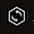
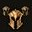
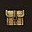

Using it
There is nothing to open and nothing to learn. Play. Read what appears.
What the icons mean
| Icon | In a note or quest line | On a dialogue line |
|---|---|---|
| Arrow | What to do here | |
| Something you could miss | A line to avoid | |
| A tip, at Extensive. A hint in the journal, at Normal. | A good line | |
| A Dark Urge moment, at Extensive | A Dark Urge choice, at Extensive. 'Resist:' or 'Take:' says which way the line leans. | |
 Die | A roll and its difficulty, at Extensive | |
  Party, chest | Party advice and loot, at Extensive |
When notes appear
- Each note shows once, when you first come near. Notes about a choice open sooner, about 14 metres out, because popups can't appear during a conversation.
- Nothing appears during a fight.
- After a load, nothing appears until you've moved. A popup beneath the loading screen would be lost.
- In busy places, smaller notes skip the screen and go straight to the journal. One notice tells you it happened.
- Once all of a note's quests are closed, it falls silent.
Reading the journal
- Open the journal's Tutorials tab. Every note you've reached is listed under Map.
- A note whose footer reads There's more in your journal says more there than it did on the ground. At Normal, that's a few hints that give nothing away. At Extensive, it's the other rolls, the other ways in and what it all costs.
- Where gives the coordinates shown on your minimap.
- The tab's Show All box lists notes you haven't reached yet. At Extensive, that's a list of spoilers. You have been warned.
On a controller
- Press the D-pad to dismiss a note. Its footer shows the button.
- When there's more to read, the footer shows the way: the menu button, then the journal.
- Tags and quest lines are ordinary game text, so they show the same way.
- Select an item to see its tooltip.